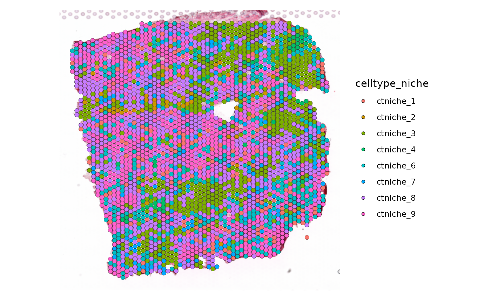
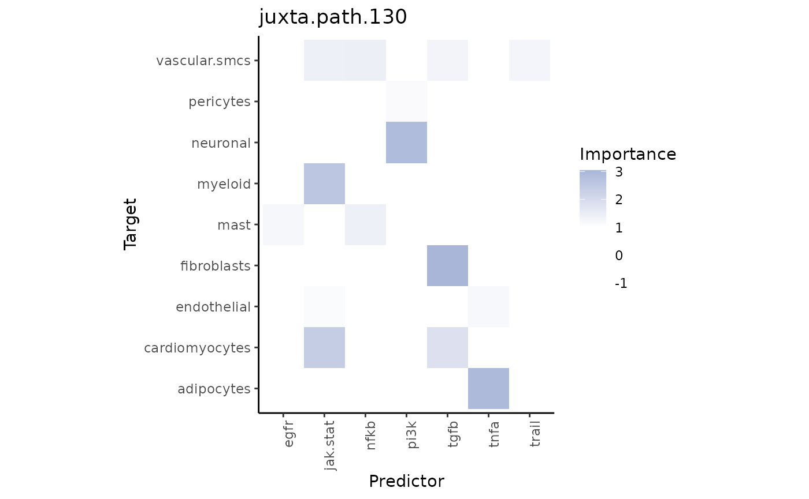
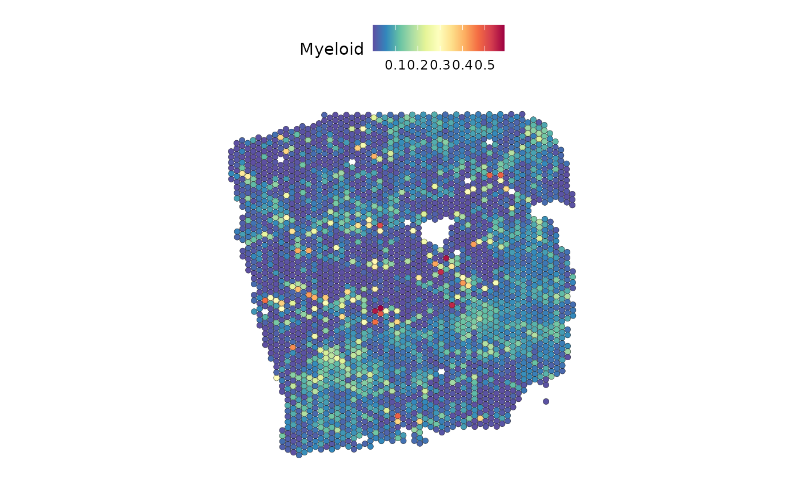

Learning functional and structural spatial relationships with MISTy
Leoni Zimmermann
Heidelberg University, Heidelberg, GermanyJovan Tanevski
Heidelberg University and Heidelberg University Hospital, Heidelberg, GermanyJožef Stefan Institute, Ljubljana, Slovenia
jovan.tanevski@uni-heidelberg.de
2024-03-25
Source:vignettes/FunctionalAndStructuralPipeline.Rmd
FunctionalAndStructuralPipeline.RmdIntroduction
10X Visium captures spatially resolved transcriptomic profiles in spots containing multiple cells. In this vignette, we will use the gene expression information from Visium data to infer pathway and transcription factor activity and separately investigate spatial relationships between them and the cell-type composition. In addition, we will examine spatial relationships of ligands and receptors.
Load the necessary R packages:
# MISTy
library(mistyR)
# For using Python
library(reticulate)
# Seurat
library(Seurat)
# Data manipulation
library(tidyverse)
# Pathways
library(decoupleR)
#Cleaning names
library(janitor)We will use some functions in python since the computation time is significantly shorter than in R. Python chunks start with a #In Python. Install and load the necessary package for Python:
py_install(c("decoupler","omnipath"), pip =TRUE)## Using Python: /usr/bin/python3.10
## Creating virtual environment '~/.virtualenvs/r-reticulate' ...## + /usr/bin/python3.10 -m venv /home/runner/.virtualenvs/r-reticulate## Done!
## Installing packages: pip, wheel, setuptools## + /home/runner/.virtualenvs/r-reticulate/bin/python -m pip install --upgrade pip wheel setuptools## Virtual environment '~/.virtualenvs/r-reticulate' successfully created.
## Using virtual environment '~/.virtualenvs/r-reticulate' ...## + /home/runner/.virtualenvs/r-reticulate/bin/python -m pip install --upgrade --no-user decoupler omnipathGet and load data
For this showcase, we use a 10X Visium spatial slide from Kuppe et al., 2022, where they created a spatial multi-omic map of human myocardial infarction. The tissue example data comes from the human heart of patient 14, which is in a chronic state following myocardial infarction. The Seurat object contains, among other things, the normalized and raw gene counts. First, we have to download and extract the file:
download.file("https://zenodo.org/records/6580069/files/10X_Visium_ACH005.tar.gz?download=1",
destfile = "10X_Visium_ACH005.tar.gz", method = "curl")
untar("10X_Visium_ACH005.tar.gz")The next step is to load the data, extract the normalized gene counts of genes expressed in at least 5% of the spots, and pixel coordinates. It is recommended to use pixel coordinates instead of row and column numbers since the rows are shifted and therefore do not express the real distance between the spots.
seurat <- readRDS("ACH005/ACH005.rds")
expression_raw <- as.matrix(GetAssayData(seurat, layer = "counts", assay = "SCT"))
geometry <- GetTissueCoordinates(seurat, scale = NULL)
# Only take genes that expressed in at least 5% of the spots
expression <- expression_raw[rownames(expression_raw[(rowSums(expression_raw > 0) / ncol(expression_raw)) >= 0.05,]),]Let’s take a look at the slide itself and some of the cell-type niches defined by Kuppe et al.:
SpatialPlot(seurat, alpha = 0)
SpatialPlot(seurat, group.by = "celltype_niche")
Extract cell-type composition
The Seurat Object of the tissue slide also contains the estimated cell type proportions from cell2location. We extract them into a separate object we will later use with MISTy and visualize some of the cell types:
# Rename to more informative names
rownames(seurat@assays$c2l_props@data) <- rownames(seurat@assays$c2l_props@data) %>%
recode('Adipo' = 'Adipocytes',
'CM' = 'Cardiomyocytes',
'Endo' = 'Endothelial',
'Fib' = 'Fibroblasts',
'PC' = 'Pericytes',
'prolif' = 'Proliferating',
'vSMCs' = 'Vascular-SMCs')
# Extract into a separate object
composition <- as_tibble(t(seurat[["c2l_props"]]$data))
# Visualize cell types
DefaultAssay(seurat) <- "c2l_props"
SpatialFeaturePlot(seurat,
keep.scale = NULL,
features = c('Vascular-SMCs', "Cardiomyocytes", "Endothelial", "Fibroblasts"),
ncol = 2) Pathway activities on cell-type composition
Let’s investigate the relationship between the cell-type compositions
and pathway activities in our example slide. But before we create the
views, we need to estimate the pathway activities. For this we will take
pathway gene sets from PROGENy
and estimate the activity with decoupleR:
# Obtain genesets
model <- get_progeny(organism = "human", top = 500)## Warning: One or more parsing issues, call `problems()` on your data frame for details,
## e.g.:
## dat <- vroom(...)
## problems(dat)
# Use multivariate linear model to estimate activity
est_path_act <- run_mlm(expression, model,.mor = NULL) We add the result to the Seurat Object and plot the estimated activities to see the distribution over the slide:
# Delete progeny assay from Kuppe et al.
seurat[['progeny']] <- NULL
# Put estimated pathway activities object into the correct format
est_path_act_wide <- est_path_act %>%
pivot_wider(id_cols = condition, names_from = source, values_from = score) %>%
column_to_rownames("condition")
# Clean names
colnames(est_path_act_wide) <- est_path_act_wide %>%
clean_names(parsing_option = 0) %>%
colnames(.)
# Add
seurat[['progeny']] <- CreateAssayObject(counts = t(est_path_act_wide))
SpatialFeaturePlot(seurat, features = c("jak.stat", "hypoxia"), image.alpha = 0)MISTy Views
For the MISTy view, we will use cell type compositions per spot as
the intraview and add the estimated PROGENy
pathway activities as juxta and paraviews. The size of the neighborhood
and the kernel, as well as the kernel family, should be chosen depending
on the experiment. Here both distances were chosen to enclose only a
small number of neighboring spots.
# Clean names
colnames(composition) <- composition %>% clean_names(parsing_option = 0) %>% colnames(.)
# create intra from cell-type composition
comp_views <- create_initial_view(composition)
# juxta & para from pathway activity
path_act_views <- create_initial_view(est_path_act_wide) %>%
add_juxtaview(geometry, neighbor.thr = 130) %>%
add_paraview(geometry, l= 200, family = "gaussian")
# Combine views
com_path_act_views <- comp_views %>%
add_views(create_view("juxtaview.path.130", path_act_views[["juxtaview.130"]]$data, "juxta.path.130"))%>%
add_views(create_view("paraview.path.200", path_act_views[["paraview.200"]]$data, "para.path.200")) Then run MISTy and collect the results:
run_misty(com_path_act_views, "result/comp_path_act")## [1] "/home/runner/work/mistyR/mistyR/vignettes/result/comp_path_act"
misty_results_com_path_act <- collect_results("result/comp_path_act/")Downstream analysis
With the collected results, we can now answer the following questions:
1. To what extent can the analyzed surrounding tissues’ pathway activities explain the cell-type composition of the spot compared to the intraview?
Here we can look at two different statistics: intra.R2
shows the variance explained by the intraview alone, and
gain.R2 shows the increase in explainable variance when we
additionally consider the other views (here juxta and para).
misty_results_com_path_act %>%
plot_improvement_stats("intra.R2")%>%
plot_improvement_stats("gain.R2") ## Warning: Removed 11 rows containing missing values or values outside the scale range
## (`geom_segment()`).## Warning: Removed 11 rows containing missing values or values outside the scale range
## (`geom_segment()`).The juxta and paraview particularly increase the explained variance for mast cells and adipocytes.
In general, the significant gain in R2 can be interpreted as the following:
“We can better explain the expression of marker X when we consider additional views other than the intrinsic view.”
To see the individual contributions of the views we can use:
misty_results_com_path_act %>%
plot_view_contributions()We see, that the intraview explains the most variance for nearly all cell types (as expected).
2. What are the specific relations that can explain the cell-type composition?
We can individually show the importance of the markers from each viewpoint as predictors of the spot intrinsic cell-type composition to explain the contributions.
Let’s look at the juxtaview:
misty_results_com_path_act %>%
plot_interaction_heatmap("juxta.path.130", clean = TRUE)
We observe that TNFa is a significant predictor for adipocytes. We can compare their distributions:
SpatialFeaturePlot(seurat, features = "tnfa", image.alpha = 0)
DefaultAssay(seurat) <- "c2l_props"
SpatialFeaturePlot(seurat, features = "Adipocytes", image.alpha = 0)We observe similar distributions for both.
Pathway activities on cell-type composition - Linear Model
The default model used by MISTy to model each view is the random forest. However, there are different models to choose from, like the faster and more interpretable linear model.
Another option we haven’t used yet is bypass.intra. With
this, we bypass training the baseline model that predicts the intraview
with features from the intraview itself. We will still be able to see
how the other views explain the intraview. We will use the same view
composition as before:
run_misty(com_path_act_views, "result/comp_path_act_linear", model.function = linear_model, bypass.intra = TRUE)## [1] "/home/runner/work/mistyR/mistyR/vignettes/result/comp_path_act_linear"
misty_results_com_path_act_linear <- collect_results("result/comp_path_act_linear")Downstream analysis
Let’s check again the gain.R2 and view
contributions:
misty_results_com_path_act_linear %>%
plot_improvement_stats("gain.R2") %>%
plot_view_contributions()## Warning: Removed 11 rows containing missing values or values outside the scale range
## (`geom_segment()`).For the specific target-predictor interaction, we look again at the juxtaview:
misty_results_com_path_act_linear %>%
plot_interaction_heatmap("juxta.path.130", clean = TRUE) Visualize the activity of the JAK-STAT pathway and myeloid distribution:
SpatialFeaturePlot(seurat, features = "jak.stat", image.alpha = 0)## Warning: Could not find jak.stat in the default search locations, found in
## 'progeny' assay instead
DefaultAssay(seurat) <- "c2l_props"
SpatialFeaturePlot(seurat, features = "Myeloid", image.alpha = 0)
Pathway activities and Transcriptionfactors on cell-type composition
In addition to the estimated pathway activities, we can also add a view to examine the relationship between cell-type composition and TF activity. First, we need to estimate the TF activity with decoupler. It is recommended to compute it with Python, as it is significantly faster:
expression_df <- as.data.frame(t(expression))## 0.00B [00:00, ?B/s]466kB [00:00, 4.14MB/s]1.11MB [00:00, 4.51MB/s]2.75MB [00:00, 7.99MB/s]5.72MB [00:00, 13.4MB/s]11.7MB [00:00, 24.3MB/s]24.1MB [00:00, 46.8MB/s]49.0MB [00:00, 90.3MB/s]52.7MB [00:00, 55.3MB/s]
## 0.00B [00:00, ?B/s]118kB [00:00, 244MB/s]## Running ulm on mat with 3175 samples and 7241 targets for 545 sources.The object with the estimation contains two elements: The first are the estimates and their respective p-values can be found in the second element.
est_TF <- py$acts_tfsTo speed up the following model training, we calculate the 1000 most variable genes expressed. We then extract the TF from the highly variable genes to create a MISTy view.
# Highly variable genes
hvg <- FindVariableFeatures(expression, selection.method = "vst", nfeatures = 1000) %>%
filter(variable == TRUE)
hvg_expr <- expression[rownames(hvg), ]
# Extract TF from the highly variable genes
hvg_TF<- est_TF[[1]][, colnames(est_TF[[1]]) %in% rownames(hvg_expr)]Misty Views
We will combine the intraview from the cell-type composition and paraviews from the estimated pathway and TF activities:
TF_view <- create_initial_view(hvg_TF) %>%
add_paraview(geometry, l = 200) # This may still take some time
# Combine Views
comp_TF_path_views <- comp_views %>% add_views(create_view("paraview.TF.200", TF_view[["paraview.200"]]$data, "para.TF.200")) %>%
add_views(create_view("paraview.path.200", path_act_views[["paraview.200"]]$data, "para.path.200"))
# Run Misty
run_misty(comp_TF_path_views, "result/comp_TF_path", model.function = linear_model, bypass.intra = TRUE)## [1] "/home/runner/work/mistyR/mistyR/vignettes/result/comp_TF_path"
misty_results_comp_TF_pathway <- collect_results("result/comp_TF_path")Downstream analysis
misty_results_comp_TF_pathway %>%
plot_improvement_stats("gain.R2") %>%
plot_view_contributions()## Warning: Removed 11 rows containing missing values or values outside the scale range
## (`geom_segment()`).When plotting the interaction heatmap, we can restrict the result by
applying a trim, that only shows targets above a defined
value for a chosen metric like gain.R2.
misty_results_comp_TF_pathway %>%
plot_interaction_heatmap("para.TF.200",
clean = TRUE,
trim.measure = "gain.R2",
trim = 20)
The TF MYC is an important predictor of fibroblasts:
DefaultAssay(seurat) <- "SCT"
SpatialFeaturePlot(seurat, features = "MYC", image.alpha = 0)
DefaultAssay(seurat) <- "c2l_props"
SpatialFeaturePlot(seurat, features = "Fibroblasts", image.alpha = 0)Indeed, we can see a similar distribution.
Ligand-Receptor
Finally, we want to learn about the spatial relationship of receptors
and ligands on the tissue slide. We will access the consensus resource
from LIANA
after downloading it from Github, pulling out the ligands and receptors
from the before-determined highly variable genes:
download.file("https://raw.githubusercontent.com/saezlab/liana-py/main/liana/resource/omni_resource.csv",
destfile = "omni_resource.csv", method = "curl")
# Ligand Receptor Resource
omni_resource <- read_csv("omni_resource.csv")%>%
filter(resource == "consensus")
# Get highly variable ligands
ligands <- omni_resource %>%
pull(source_genesymbol) %>%
unique()
hvg_lig <- hvg_expr[rownames(hvg_expr) %in% ligands,]
# Get highly variable receptors
receptors <- omni_resource %>%
pull(target_genesymbol) %>%
unique()
hvg_recep <- hvg_expr[rownames(hvg_expr) %in% receptors,]
# Clean names
rownames(hvg_lig) <- hvg_lig %>%
clean_names(parsing_option = 0) %>%
rownames(.)
rownames(hvg_recep) <- hvg_recep %>% clean_names(parsing_option = 0) %>%
rownames(.)Misty Views
We are going to create a combined view with the receptors in the intraview as targets and the ligands in the paraview as predictors:
# Create views and combine them
receptor_view <- create_initial_view(as.data.frame(t(hvg_recep)))
ligand_view <- create_initial_view(as.data.frame(t(hvg_lig))) %>%
add_paraview(geometry, l = 200, family = "gaussian")
lig_recep_view <- receptor_view %>% add_views(create_view("paraview.ligand.200", ligand_view[["paraview.200"]]$data, "para.lig.200"))
run_misty(lig_recep_view, "results/lig_recep", bypass.intra = TRUE)## [1] "/home/runner/work/mistyR/mistyR/vignettes/results/lig_recep"
misty_results_lig_recep <- collect_results("results/lig_recep")Downstream analysis
Let’s look at important interactions. An additional way to reduce the
number of interactions shown in the heatmap is applying a
cutoff, that introduces an importance threshold:
misty_results_lig_recep %>%
plot_interaction_heatmap("para.lig.200", clean = TRUE, cutoff = 2, trim.measure ="gain.R2", trim = 10)Remember that MISTy does not only infer interactions between ligands and their respective receptor, but rather all possible interactions between ligands and receptors. We can visualize one of the interactions with high importance:
DefaultAssay(seurat) <- "SCT"
SpatialFeaturePlot(seurat, features = "CRLF1", image.alpha = 0)
SpatialFeaturePlot(seurat, features = "COMP", image.alpha = 0)The plots show a co-occurrence of the ligand and receptor, although they are not an annotated receptor-ligand pair.
Session Info
Here is the output of sessionInfo() at the point when
this document was compiled.
## R version 4.3.3 (2024-02-29)
## Platform: x86_64-pc-linux-gnu (64-bit)
## Running under: Ubuntu 22.04.4 LTS
##
## Matrix products: default
## BLAS: /usr/lib/x86_64-linux-gnu/openblas-pthread/libblas.so.3
## LAPACK: /usr/lib/x86_64-linux-gnu/openblas-pthread/libopenblasp-r0.3.20.so; LAPACK version 3.10.0
##
## locale:
## [1] LC_CTYPE=C.UTF-8 LC_NUMERIC=C LC_TIME=C.UTF-8
## [4] LC_COLLATE=C.UTF-8 LC_MONETARY=C.UTF-8 LC_MESSAGES=C.UTF-8
## [7] LC_PAPER=C.UTF-8 LC_NAME=C LC_ADDRESS=C
## [10] LC_TELEPHONE=C LC_MEASUREMENT=C.UTF-8 LC_IDENTIFICATION=C
##
## time zone: UTC
## tzcode source: system (glibc)
##
## attached base packages:
## [1] stats graphics grDevices utils datasets methods base
##
## other attached packages:
## [1] distances_0.1.10 janitor_2.2.0 decoupleR_2.8.0 lubridate_1.9.3
## [5] forcats_1.0.0 stringr_1.5.1 dplyr_1.1.4 purrr_1.0.2
## [9] readr_2.1.5 tidyr_1.3.1 tibble_3.2.1 ggplot2_3.5.0
## [13] tidyverse_2.0.0 Seurat_5.0.3 SeuratObject_5.0.1 sp_2.1-3
## [17] reticulate_1.35.0 mistyR_1.10.0 BiocStyle_2.30.0
##
## loaded via a namespace (and not attached):
## [1] RcppAnnoy_0.0.22 splines_4.3.3 later_1.3.2
## [4] filelock_1.0.3 R.oo_1.26.0 cellranger_1.1.0
## [7] polyclip_1.10-6 hardhat_1.3.1 pROC_1.18.5
## [10] rpart_4.1.23 fastDummies_1.7.3 lifecycle_1.0.4
## [13] rprojroot_2.0.4 vroom_1.6.5 globals_0.16.3
## [16] lattice_0.22-5 MASS_7.3-60.0.1 backports_1.4.1
## [19] magrittr_2.0.3 plotly_4.10.4 sass_0.4.9
## [22] rmarkdown_2.26 jquerylib_0.1.4 yaml_2.3.8
## [25] rlist_0.4.6.2 httpuv_1.6.14 sctransform_0.4.1
## [28] spam_2.10-0 spatstat.sparse_3.0-3 cowplot_1.1.3
## [31] pbapply_1.7-2 RColorBrewer_1.1-3 abind_1.4-5
## [34] rvest_1.0.4 Rtsne_0.17 R.utils_2.12.3
## [37] nnet_7.3-19 rappdirs_0.3.3 ipred_0.9-14
## [40] lava_1.8.0 ggrepel_0.9.5 irlba_2.3.5.1
## [43] listenv_0.9.1 spatstat.utils_3.0-4 goftest_1.2-3
## [46] RSpectra_0.16-1 spatstat.random_3.2-3 fitdistrplus_1.1-11
## [49] parallelly_1.37.1 pkgdown_2.0.7 leiden_0.4.3.1
## [52] codetools_0.2-19 xml2_1.3.6 tidyselect_1.2.1
## [55] farver_2.1.1 stats4_4.3.3 matrixStats_1.2.0
## [58] spatstat.explore_3.2-7 jsonlite_1.8.8 caret_6.0-94
## [61] ellipsis_0.3.2 progressr_0.14.0 iterators_1.0.14
## [64] ggridges_0.5.6 survival_3.5-8 systemfonts_1.0.6
## [67] foreach_1.5.2 tools_4.3.3 progress_1.2.3
## [70] ragg_1.3.0 ica_1.0-3 Rcpp_1.0.12
## [73] glue_1.7.0 prodlim_2023.08.28 gridExtra_2.3
## [76] ranger_0.16.0 xfun_0.42 here_1.0.1
## [79] withr_3.0.0 BiocManager_1.30.22 fastmap_1.1.1
## [82] fansi_1.0.6 digest_0.6.35 timechange_0.3.0
## [85] R6_2.5.1 mime_0.12 textshaping_0.3.7
## [88] colorspace_2.1-0 scattermore_1.2 tensor_1.5
## [91] spatstat.data_3.0-4 R.methodsS3_1.8.2 utf8_1.2.4
## [94] generics_0.1.3 recipes_1.0.10 data.table_1.15.2
## [97] class_7.3-22 ridge_3.3 prettyunits_1.2.0
## [100] httr_1.4.7 htmlwidgets_1.6.4 ModelMetrics_1.2.2.2
## [103] uwot_0.1.16 pkgconfig_2.0.3 gtable_0.3.4
## [106] timeDate_4032.109 lmtest_0.9-40 selectr_0.4-2
## [109] furrr_0.3.1 OmnipathR_3.10.1 htmltools_0.5.7
## [112] dotCall64_1.1-1 bookdown_0.38 scales_1.3.0
## [115] png_0.1-8 gower_1.0.1 snakecase_0.11.1
## [118] knitr_1.45 tzdb_0.4.0 reshape2_1.4.4
## [121] checkmate_2.3.1 nlme_3.1-164 curl_5.2.1
## [124] cachem_1.0.8 zoo_1.8-12 KernSmooth_2.23-22
## [127] parallel_4.3.3 miniUI_0.1.1.1 desc_1.4.3
## [130] pillar_1.9.0 grid_4.3.3 logger_0.3.0
## [133] vctrs_0.6.5 RANN_2.6.1 promises_1.2.1
## [136] xtable_1.8-4 cluster_2.1.6 evaluate_0.23
## [139] cli_3.6.2 compiler_4.3.3 rlang_1.1.3
## [142] crayon_1.5.2 future.apply_1.11.1 labeling_0.4.3
## [145] plyr_1.8.9 fs_1.6.3 stringi_1.8.3
## [148] viridisLite_0.4.2 deldir_2.0-4 assertthat_0.2.1
## [151] munsell_0.5.0 lazyeval_0.2.2 spatstat.geom_3.2-9
## [154] Matrix_1.6-5 RcppHNSW_0.6.0 hms_1.1.3
## [157] patchwork_1.2.0 bit64_4.0.5 future_1.33.1
## [160] shiny_1.8.0 highr_0.10 ROCR_1.0-11
## [163] igraph_2.0.3 memoise_2.0.1 bslib_0.6.2
## [166] bit_4.0.5 readxl_1.4.3